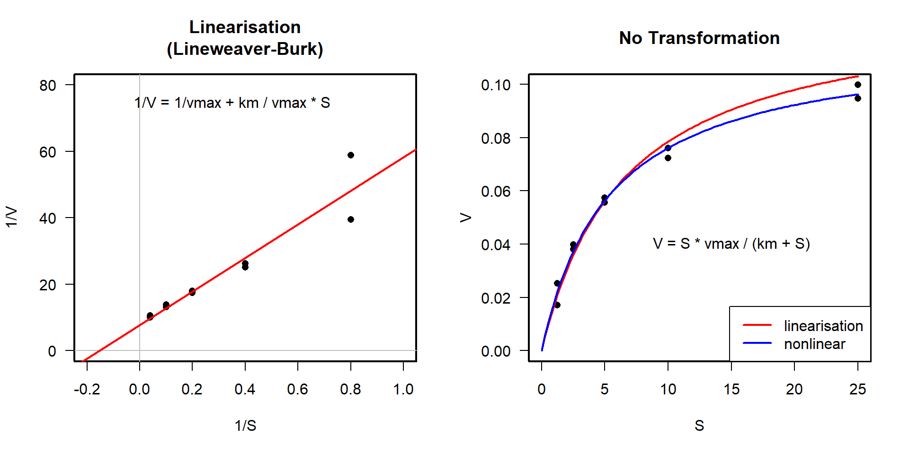
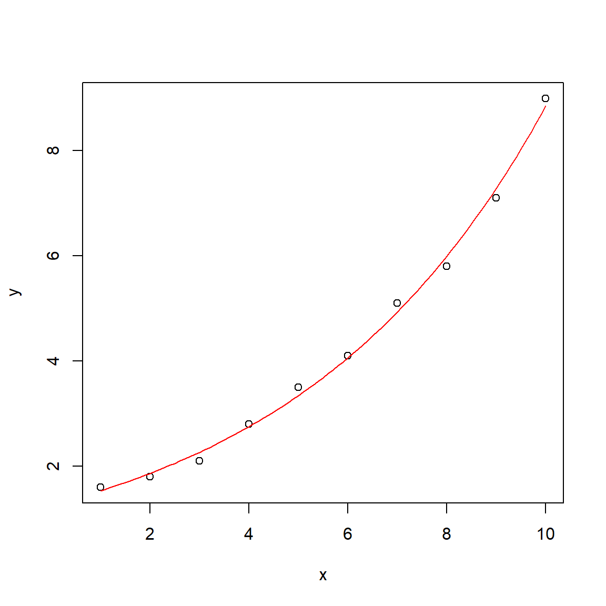
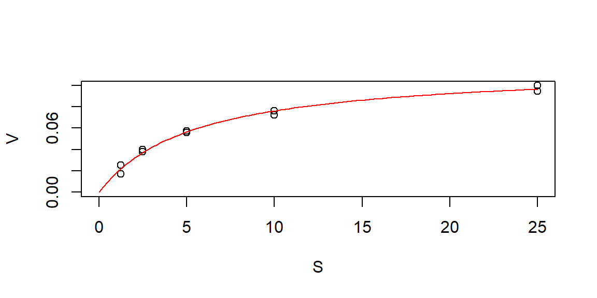

… kann mit der bekannten Michaelis-Menten-Funktion beschrieben werden:
\[
v = v_{max} \frac{S}{k_m + S}
\]

Linearisierung vs. (echte) nichtlineare Regression
Linearisierende Transformation
[>] Angemessen, wenn die Transformation die Homogenität der Varianzen verbessert. [+] Schnell, einfach und leicht. [+] Analytische Lösung liefert das globale Optimum. [-] Nur eine begrenzte Anzahl von Funktionen kann angepasst werden. [-] Kann zu einer falsch transformierten Fehlerstruktur und verzerrten Ergebnissen führen.
Nichtlineare Regression
[>] Geeignet, wenn die Fehlerstruktur bereits homogen ist und/oder keine analytische Lösung existiert. [+] Kann zur Anpassung beliebiger Funktionen verwendet werden, sofern die Parameter identifizierbar sind. [-] Benötigt Startwerte und beträchtliche Berechnungszeit. [-] Beste Lösung (globales Optimum) ist nicht garantiert.
Nichtlineare Regression in R: einfache exponentielle Regression
Modell anpassen
# Beispieldatenx <-1:10y <-c(1.6, 1.8, 2.1, 2.8, 3.5, 4.1, 5.1, 5.8, 7.1, 9.0)# Anfangsparameter für den Optimiererpstart <-c(a =1, b =1)# nichtlineare kleinste Quadratefit <-nls(y ~ a *exp(b * x), start = pstart)summary(fit)
Formula: y ~ a * exp(b * x)
Parameters:
Estimate Std. Error t value Pr(>|t|)
a 1.263586 0.049902 25.32 6.34e-09 ***
b 0.194659 0.004716 41.27 1.31e-10 ***
---
Signif. codes: 0 '***' 0.001 '**' 0.01 '*' 0.05 '.' 0.1 ' ' 1
Residual standard error: 0.1525 on 8 degrees of freedom
Number of iterations to convergence: 13
Achieved convergence tolerance: 5.956e-08
Plotte Ergebnisse
# zusätzliche x-Werte, für eine geglättete Kurvex1 <-seq(1, 10, 0.1)y1 <-predict(fit, data.frame(x = x1))plot(x, y)lines(x1, y1, col ="red")

Angepasste Parameter
Formula: y ~ a * exp(b * x)
Parameters:
Estimate Std. Error t value Pr(>|t|)
a 1.263586 0.049902 25.32 6.34e-09 ***
b 0.194659 0.004716 41.27 1.31e-10 ***
---
Signif. codes: 0 '***' 0.001 '**' 0.01 '*' 0.05 '.' 0.1 ' ' 1
Residual standard error: 0.1525 on 8 degrees of freedom
Number of iterations to convergence: 13
Achieved convergence tolerance: 5.956e-08
Estimate: die angepassten Parameter
Std. Error:\(s_{\bar{x}}\): zeigt die Zuverlässigkeit der Schätzung an
t- und p-Werte: keine Überinterpretation!
In der nichtlinearen Welt können „nicht-signifikante“ Parameter strukturell notwendig sein.
Formula: V ~ f(S, Vm, K)
Parameters:
Estimate Std. Error t value Pr(>|t|)
Vm 0.11713 0.00381 30.74 1.36e-09 ***
K 5.38277 0.46780 11.51 2.95e-06 ***
---
Signif. codes: 0 '***' 0.001 '**' 0.01 '*' 0.05 '.' 0.1 ' ' 1
Residual standard error: 0.003053 on 8 degrees of freedom
Correlation of Parameter Estimates:
Vm
K 0.88
Number of iterations to convergence: 3
Achieved convergence tolerance: 6.678e-06
Plot

Anmerkung: Korrelation der Parameter
Hohe absolute Korrelationswerte deuten auf die Nichtidentifizierbarkeit von Parametern hin.
kritischer Wert hängt von den Daten ab
manchmal können bessere Startwerte oder ein anderer Optimierungsalgorithmus helfen
Praktische Hinweise
Daten plotten
Finde gute Ausgangswerte durch Nachdenken oder durch Trial and Error
Vermeide sehr kleine und/oder sehr große Zahlen \(\longrightarrow\) skaliere das Problem auf Werte zwischen etwa 0,001 und 1000 um
Beginne mit einer einfachen Funktion und füge nach und nach Terme und Parameter hinzu
Nimm die Signifikanz von Parametern nicht zu ernst. Ein nicht signifikanter Parameter kann für die Struktur des Modells notwendig sein, sein Wegfall macht das gesamte Modell ungültig.
Weiterführende Literatur
Paket growthrates für Wachstumskurven: https://cran.r-project.org/package=growthrates
Paket FME für komplexere Modellanpassungsaufgaben (Identifizierbarkeitsanalyse, eingeschränkte Optimierung, mehrere abhängige Variablen und MCMC): (Soetaert & Petzoldt, 2010), https://cran.r-project.org/package=FME
Mehr über Optimierung in R: https://cran.r-project.org/web/views/Optimization.html
Anhang
Lineweaver-Burk-Transformation vs. nichtlineare Anpassung
Price, W. L. (1977). A controlled random search procedure for global optimization. The Computer Journal, 20(4), 367–370.
Price, W. L. (1983). Global optimization by controlled random search. Journal of Optimization Theory and Applications, 40(3), 333–348.
Soetaert, K., & Petzoldt, T. (2010). Inverse modelling, sensitivity and monte carlo analysis in R using package FME. Journal of Statistical Software, 33(3), 1–28. https://doi.org/10.18637/jss.v033.i03

 Die Newton-Methode (
Die Newton-Methode (